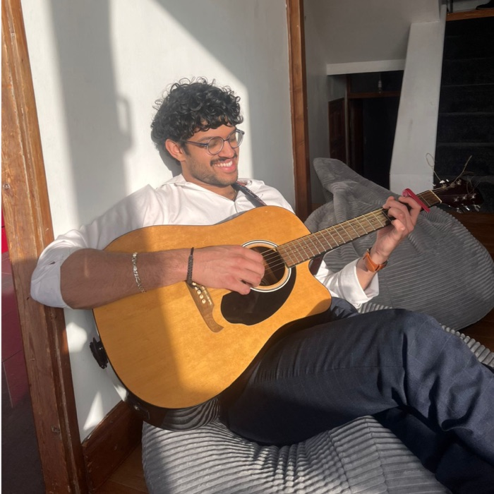
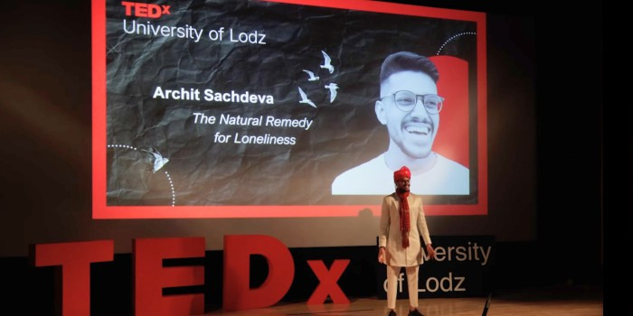

TEDx
TEDxUniversity of Łódź
The Natural Remedy for Loneliness.
01No contacts, no intro.
02A LinkedIn DM, then a few more.
03A stage in Poland.

Advocate for open source and cloud observability, working with SRE and DevOps teams.
Speakademy. Helping founders and thought leaders find their voice.
Coaching international players for Babolat. Programmes, drills, match days.
Contemporary folk, covers and originals. 200+ open mics. Tap to strum.
Running, calisthenics, and currently a lot of tennis.
Training plans and tournament travel with international players.
First Class in Digital Technology Solutions. CCNA along the way.
Still running, still learning from every client.

Booked the stage myself, from a DM.
Video guides that made a product easier to explain and sell.
Demos and sizing for schools across the UK and Ireland.
SRE and DevOps teams across the UK, Ireland and South Africa.
Started messy. Getting less so.
Delay engine, knowledge graph, quiz mode, daily PDF reports.
A spare room in London means dozens of numbers and no idea who is who. This keeps track of which viewing is where.
Semantic retrieval over your own writing, using embeddings.
Find the real problem first.
Start messy. Iterate.
Every loss is data.
Teach it to learn it.
Don’t wait for the invite.
Quietly pleased when that line goes down.